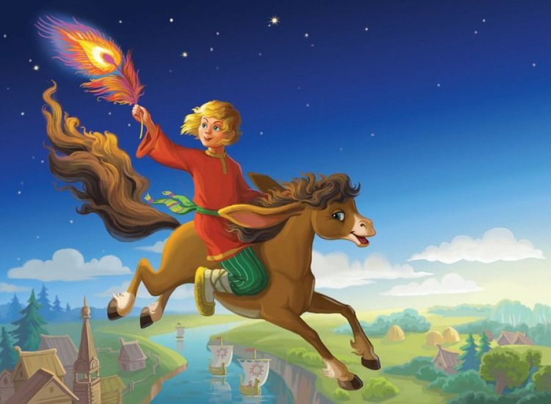
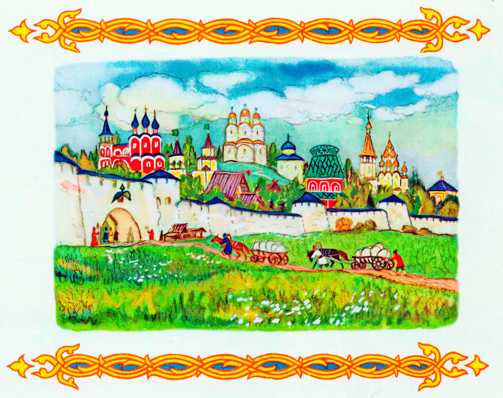
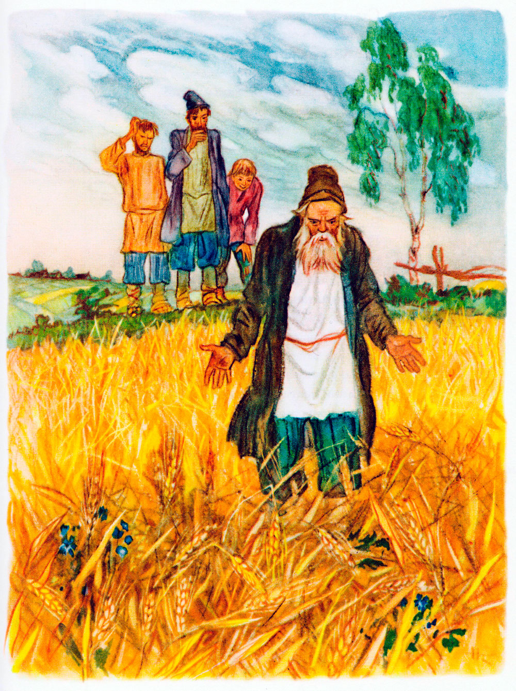
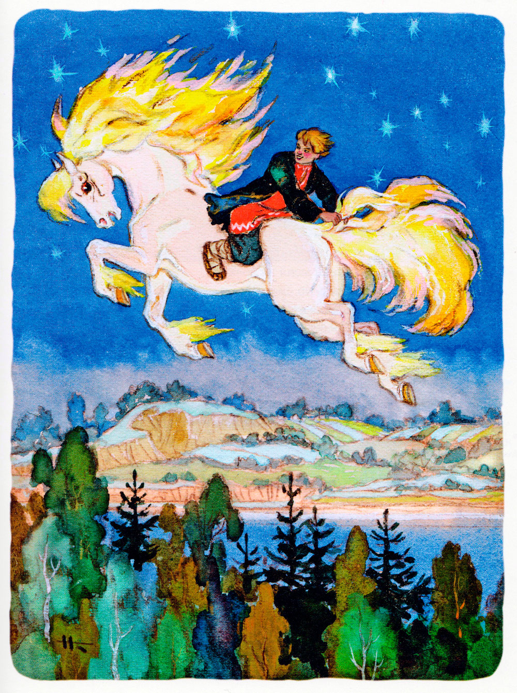
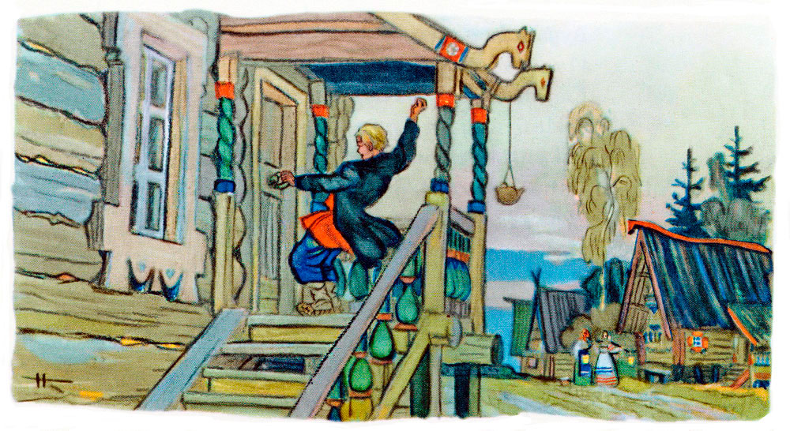
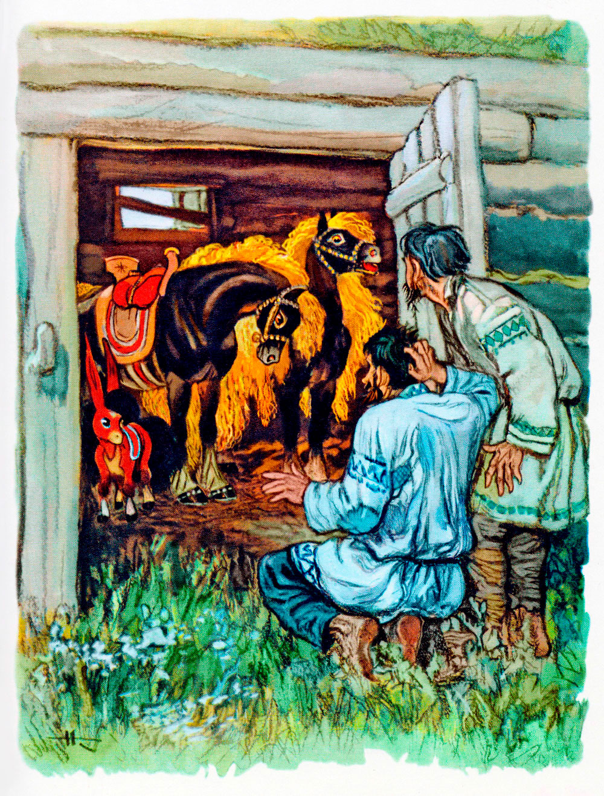
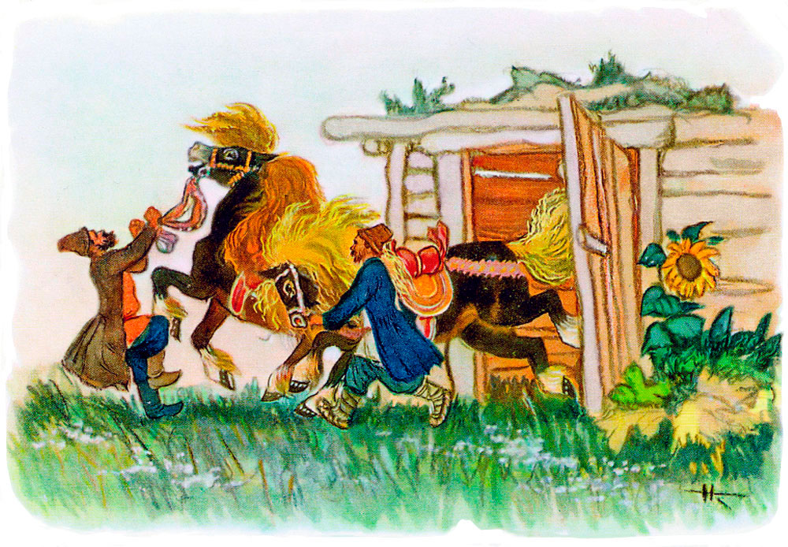

Конёк-горбунок
Петр Ершов
Часть 1. Начинается сказка сказываться.
За горами, за лесами,
За широкими морями,
Против неба - на земле
Жил старик в одном селе.
У старинушки три сына:
Старший умный был детина,
Средний был и так и сяк,
Младший вовсе был дурак.

Братья сеяли пшеницу
Да возили в град-столицу:
Знать, столица та была
Недалече от села.
Там пшеницу продавали,
Деньги счетом принимали
И с набитою сумой
Возвращалися домой.
В долгом времени аль вскоре
Приключилося им горе:
Кто-то в поле стал ходить
И пшеницу шевелить.

Мужички такой печали
Отродяся не видали;
Стали думать да гадать -
Как бы вора соглядать;
Наконец они смекнули,
Чтоб стоять на карауле,
Хлеб ночами поберечь,
Злого вора подстеречь.
Вот, как стало лишь смеркаться,
Начал старший брат сбираться:
Вынул вилы и топор
И отправился в дозор.
Ночь ненастная настала,
На него боязнь напала,
И со страхов наш мужик
Закопался под сенник.
Ночь проходит, день приходит;
С сенника дозорный сходит
И, облив себя водой,
Стал стучаться под избой:
"Эй вы, сонные тетери!
Отворяйте брату двери,
Под дождем я весь промок
С головы до самых ног".
Братья двери отворили,
Караульщика впустили,
Стали спрашивать его:
Не видал ли он чего?
Караульщик помолился,
Вправо, влево поклонился
И, прокашлявшись, сказал:
"Я всю ноченьку не спал;
На мое ж притом несчастье,
Было страшное ненастье:
Дождь вот так ливмя и лил,
Рубашонку всю смочил.
Уж куда как было скучно!..
Впрочем, все благополучно".
Похвалил его отец:
"Ты, Данило, молодец!
Ты вот, так сказать, примерно,
Сослужил мне службу верно,
То есть, будучи при всем,
Не ударил в грязь лицом".
Стало сызнова смеркаться;
Средний брат пошел сбираться:
Взял и вилы и топор
И отправился в дозор.
Ночь холодная настала,
Дрожь на малого напала,
Зубы начали плясать;
Он ударился бежать -
И всю ночь ходил дозором
У соседки под забором.
Жутко было молодцу!
Но вот утро. Он к крыльцу:
"Эй вы, сони! Что вы спите!
Брату двери отворите;
Ночью страшный был мороз,-
До животиков промерз".
Братья двери отворили,
Караульщика впустили,
Стали спрашивать его:
Не видал ли он чего?
Караульщик помолился,
Вправо, влево поклонился
И сквозь зубы отвечал:
"Всю я ноченьку не спал,
Да, к моей судьбе несчастной,
Ночью холод был ужасный,
До сердцов меня пробрал;
Всю я ночку проскакал;
Слишком было несподручно...
Впрочем, все благополучно".
И сказал ему отец:
"Ты, Гаврило, молодец!"
Стало в третий раз смеркаться,
Надо младшему сбираться;
Он и усом не ведет,
На печи в углу поет
Изо всей дурацкой мочи:
"Распрекрасные вы очи!"
Братья ну ему пенять,
Стали в поле погонять,
Но сколь долго ни кричали,
Только голос потеряли:
Он ни с места. Наконец
Подошел к нему отец,
Говорит ему: "Послушай,
Побегай в дозор, Ванюша.
Я куплю тебе лубков,
Дам гороху и бобов".
Тут Иван с печи слезает,
Малахай свой надевает,
Хлеб за пазуху кладет,
Караул держать идет.
Поле все Иван обходит,
Озираючись кругом,
И садится под кустом;
Звезды на небе считает
Да краюшку уплетает.
Вдруг о полночь конь заржал...
Караульщик наш привстал,
Посмотрел под рукавицу
И увидел кобылицу.
Кобылица та была
Вся, как зимний снег, бела,
Грива в землю, золотая,
В мелки кольца завитая.
"Эхе-хе! так вот какой
Наш воришко!.. Но, постой,
Я шутить ведь, не умею,
Разом сяду те на шею.
Вишь, какая саранча!"
И, минуту улуча,
К кобылице подбегает,
За волнистый хвост хватает
И прыгнул к ней на хребет -
Только задом наперед.

Кобылица молодая,
Очью бешено сверкая,
Змеем голову свила
И пустилась, как стрела.
Вьется кругом над полями,
Виснет пластью надо рвами,
Мчится скоком по горам,
Ходит дыбом по лесам,
Хочет силой аль обманом,
Лишь бы справиться с Иваном.
Но Иван и сам не прост -
Крепко держится за хвост.
Наконец она устала.
"Ну, Иван, - ему сказала,-
Коль умел ты усидеть,
Так тебе мной и владеть.
Дай мне место для покою
Да ухаживай за мною
Сколько смыслишь. Да смотри:
По три утренни зари
Выпущай меня на волю
Погулять по чисту полю.
По исходе же трех дней
Двух рожу тебе коней -
Да таких, каких поныне
Не бывало и в помине;
Да еще рожу конька
Ростом только в три вершка,
На спине с двумя горбами
Да с аршинными ушами.
Двух коней, коль хошь, продай,
Но конька не отдавай
Ни за пояс, ни за шапку,
Ни за черную, слышь, бабку.
На земле и под землей
Он товарищ будет твой:
Он зимой тебя согреет,
Летом холодом обвеет,
В голод хлебом угостит,
В жажду медом напоит.
Я же снова выйду в поле
Силы пробовать на воле".
"Ладно", - думает Иван
И в пастуший балаган
Кобылицу загоняет,
Дверь рогожей закрывает
И, лишь только рассвело,
Отправляется в село,
Напевая громко песню:
"Ходил молодец на Пресню".

Вот он всходит на крыльцо,
Вот хватает за кольцо,
Что есть силы в дверь стучится,
Чуть что кровля не валится,
И кричит на весь базар,
Словно сделался пожар.
Братья с лавок поскакали,
Заикаяся вскричали:
"Кто стучится сильно так?" -
"Это я, Иван-дурак!"
Братья двери отворили,
Дурака в избу впустили
И давай его ругать, -
Как он смел их так пугать!
А Иван наш, не снимая
Ни лаптей, ни малахая,
Отправляется на печь
И ведет оттуда речь
Про ночное похожденье,
Всем ушам на удивленье:
"Всю я ноченьку не спал,
Звезды на небе считал;
Месяц, ровно, тоже светил, -
Я порядком не приметил.
Вдруг приходит дьявол сам,
С бородою и с усам;
Рожа словно как у кошки,
А глаза-то-что те плошки!
Вот и стал тот черт скакать
И зерно хвостом сбивать.
Я шутить ведь не умею -
И вскочи ему на шею.
Уж таскал же он, таскал,
Чуть башки мне не сломал,
Но и я ведь сам не промах,
Слышь, держал его как в жомах.
Бился, бился мой хитрец
И взмолился наконец:
"Не губи меня со света!
Целый год тебе за это
Обещаюсь смирно жить,
Православных не мутить".
Я, слышь, слов-то не померил,
Да чертенку и поверил".
Тут рассказчик замолчал,
Позевнул и задремал.
Братья, сколько ни серчали,
Не смогли - захохотали,
Ухватившись под бока,
Над рассказом дурака.
Сам старик не мог сдержаться,
Чтоб до слез не посмеяться,
Хоть смеяться - так оно
Старикам уж и грешно.
Много ль времени аль мало
С этой ночи пробежало,-
Я про это ничего
Не слыхал ни от кого.
Ну, да что нам в том за дело,
Год ли, два ли пролетело, -
Ведь за ними не бежать...
Станем сказку продолжать.
Ну-с, так вот что! Раз Данило
(В праздник, помнится, то было),
Натянувшись зельно пьян,
Затащился в балаган.
Что ж он видит? - Прекрасивых
Двух коней золотогривых
Да игрушечку-конька
Ростом только в три вершка,
На спине с двумя горбами
Да с аршинными ушами.
"Хм! Теперь-то я узнал,
Для чего здесь дурень спал!" -
Говорит себе Данило...
Чудо разом хмель посбило;
Вот Данило в дом бежит
И Гавриле говорит:
"Посмотри, каких красивых
Двух коней золотогривых
Наш дурак себе достал:
Ты и слыхом не слыхал".
И Данило да Гаврило,
Что в ногах их мочи было,
По крапиве прямиком
Так и дуют босиком.
Спотыкнувшися три раза,
Починивши оба глаза,
Потирая здесь и там,
Входят братья к двум коням.

Кони ржали и храпели,
Очи яхонтом горели;
В мелки кольца завитой,
Хвост струился золотой,
И алмазные копыты
Крупным жемчугом обиты.
Любо-дорого смотреть!
Лишь царю б на них сидеть!
Братья так на них смотрели,
Что чуть-чуть не окривели.
"Где он это их достал? -
Старший среднему сказал. -
Но давно уж речь ведется,
Что лишь дурням клад дается,
Ты ж хоть лоб себе разбей,
Так не выбьешь двух рублей.
Ну, Гаврило, в ту седмицу
Отведем-ка их в столицу;
Там боярам продадим,
Деньги ровно поделим.
А с деньжонками, сам знаешь,
И попьешь и погуляешь,
Только хлопни по мешку.
А благому дураку
Недостанет ведь догадки,
Где гостят его лошадки;
Пусть их ищет там и сям.
Ну, приятель, по рукам!"
Братья разом согласились,
Обнялись, перекрестились
И вернулися домой,
Говоря промеж собой
Про коней и про пирушку
И про чудную зверушку.
Время катит чередом,
Час за часом, день за днем.
И на первую седмицу
Братья едут в град-столицу,
Чтоб товар свой там продать
И на пристани узнать,
Не пришли ли с кораблями
Немцы в город за холстами
И нейдет ли царь Салтан
Басурманить христиан.
Вот иконам помолились,
У отца благословились,
Взяли двух коней тайком
И отправились тишком.

Продолжение следует